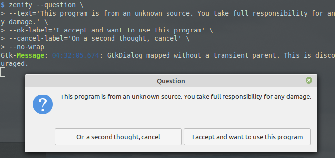

AppImage is great
If you distro hop a lot, you should know it can be daunting to setup your workflow again after a hype powered hop. It can be even more frustrating if packages you need are not available in local repo or require compiling. Compiling isn't really a bad thing or frustrating, but it can take long time. Let me introduce [drums ...] AppImage üéâÔ∏è. This beauty has everyting in it and it is cross-distro.
Fun Fact: Apple have been using AppImage like technology for years. If you used a Mac PC*, you probably downloaded .dmg (disk image) files to install programs which are not available on App Store. Programs in .dmg can be run without installing. Installing them is as simple as moving them to Applications directory.
* Macs are personal computers, change my mind.
AppImages are awesome but not perfect:
No installation
Pro They are portable and don't need root priviledges to install
Con They are archieves that may take few seconds to extract
Ship with their dependencies
Pro No update breaks AppImage dependency
except updates to fuse or kernel
Con They usualy are larger than normal installation from local repo
Read only
Pro No virus or malware can enter from outside
Con Any changes to settings and such are stored in
$USERprofile, not in AppImage
Honorable mentions
Pro Multiple versions can co-exist and sometimes even "co-run"
Con Most AppImages don't create application menu entry for easy access. GitNote is one of few that does it for you.
This issue can be addressed for all AppImages via appimaged
Con AppImages aren't executable by default. I know the security reason behind it and don't really mind that, but warning users with a question dialog would be better UX in my opinion

This issue can be addressed for all AppImages via appimaged

I wrote this post out of frustration because most AppImages didn't appear in applications menu like applications installed from local repo. This kinda defeats the goal of AppImage which is "one app = one file".
Tutorial - Manual
I initially wrote this tutorial for future reference for myself
As an example, I will write .desktop file for Rambox. You can follow along.
Things we need
-
AppImage of Rambox (duh)
-
rambox.desktopfile at~/.local/share/applications -
Icon
-
Move AppImage to
~/.local/bindirectory. For sake of tidyness. -
Make sure that AppImage is executable. Then run
-
Running Rambox AppImage will extract its content to
/tmp/.mount_RamboxXYZ. You can find Rambox's icons undericondirectory. Copy it to~/.local/share, it will merge Rambox's icons into local icons -
Write a
.desktopfile at~/.local/share/applicationswith below template. Remember to change every attitude according to your program.
[Desktop Entry]
# Required
# Type must be set to Application, else OS will ignore this file
Type=Application
# The name of the application
Name=Rambox
# The executable of the application, possibly with arguments.
Exec=~/.local/bin/Rambox.AppImage
# Recommended
# Comment, AKA description. This will be shown as tooltip.
Comment=All communication services in 1 place
# The name of the icon that will be used to display this entry
# This is not a path. Application icons should be copied to
# .local/share/icons/hicolor/[icon_dimension]/apps
Icon=rambox
# Describes whether this application needs to be run in a terminal
# set to true if need to launch program in terminal (such as htop,
# vim) or want to read logs
Terminal=false
# Describes the categories in which this entry should be shown
# Seperated using ';'
# For available categories, visit link below:
# https://specifications.freedesktop.org/menu-spec/latest/apa.html
Categories=Communication;Internet;
# Source: https://wiki.archlinux.org/index.php/Desktop_entries
- Enjoy
Later I found that there is a daemon for semi-automating this process.
Tutorial - Semi-Automated
-
Install
appimagedas instructed on appimaged readme - Once -
Re-login - Once
-
Move AppImage you downloaded to
~/.local/binor~/Applications- for every AppImage -
Enjoy - Always :D
Thanks to everyone who worked on development of AppImage system. It is awesome
#appimage #software #linux